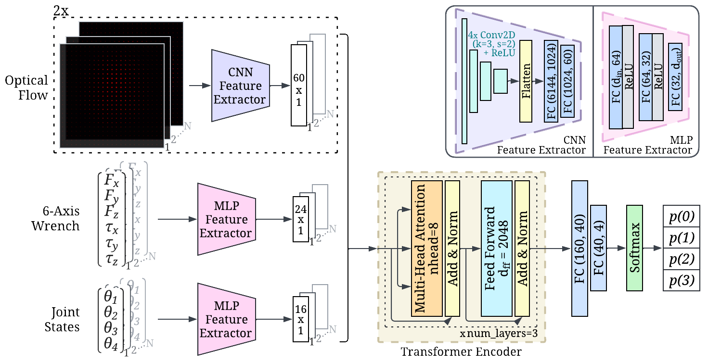

A transformer based neural network was used to classify each grasp and rubbing motion into one of the four labels (0, 1, 2, or 3 layers of grasped cloth). The model inputs are N-length time sequences of optical flow,
6-axis wrench, and joint state data (N=200). Extracted features from each input are concatenated and fed into a transformer
encoder [14], followed by fully-connected layers and a softmax function. The resulting output is the probability distribution
across the 4 classes (0, 1, 2 and 3 layers of cloth). Ablations to optimize for the best model architecture were completed, and are described in depth in the paper.
